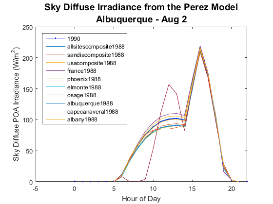

pvl_perez
Determine sky diffuse irradiance on a tilted surface using the Perez model.
Contents
Syntax
SkyDiffuse = pvl_perez(SurfTilt, SurfAz, DHI, DNI, HExtra, SunZen, SunAz, AM)
SkyDiffuse = pvl_perez(SurfTilt, SurfAz, DHI, DNI, HExtra, SunZen, SunAz, AM, model)
Description
The Perez model [3] determines the sky diffuse irradiance on a tilted surface using the surface tilt angle, surface azimuth angle, diffuse horizontal irradiance, direct normal irradiance, extraterrestrial irradiance, sun zenith angle, sun azimuth angle, and relative (not pressure-corrected) airmass. An optional selector may be used to specify any of Perez's model coefficient sets.
Inputs
- SurfTilt - a scalar or vector of surface tilt angles in decimal degrees. If SurfTilt is a vector it must be of the same size as all other vector inputs. SurfTilt must be >=0 and <=180. The tilt angle is defined as degrees from horizontal (e.g. surface facing up = 0, surface facing horizon = 90)
- SurfAz - a scalar or vector of surface azimuth angles in decimal degrees. If SurfAz is a vector it must be of the same size as all other vector inputs. SurfAz must be >=0 and <=360. The azimuth convention is defined as degrees east of north (e.g. North = 0, East = 90, West = 270).
- DHI - a scalar or vector of diffuse horizontal irradiance in W/m^2. If DHI is a vector it must be of the same size as all other vector inputs. DHI must be >=0.
- DNI - a scalar or vector of direct normal irradiance in W/m^2. If DNI is a vector it must be of the same size as all other vector inputs. DNI must be >=0. If DNI values are not available, it is possible to use the pvl_disc function to estimate DNI from GHI.
- HExtra - a scalar or vector of extraterrestrial normal irradiance in W/m^2. If HExtra is a vector it must be of the same size as all other vector inputs. HExtra must be >=0. HExtra can be estimated using the pvl_extraradiation function.
- SunZen - a scalar or vector of apparent (refraction-corrected) zenith angles in decimal degrees. If SunZen is a vector it must be of the same size as all other vector inputs. SunZen must be >=0 and < = 180. SunZen can be calculated using the pvl_ephemeris function.
- SunAz - a scalar or vector of sun azimuth angles in decimal degrees. If SunAz is a vector it must be of the same size as all other vector inputs. SunAz must be >=0 and < = 360. The Azimuth convention is defined as degrees east of north (e.g. North = 0, East = 90, West = 270). SunAz can be calculated using the pvl_ephemeris function.
- AM - a scalar or vector of relative (not pressure-corrected) airmass values. If AM is a vector it must be of the same size as all other vector inputs. AM must be >=0. AM can be calculated using the pvl_relativeairmass and the pvl_absoluteairmass functions.
- model - a character string which selects the desired set of Perez coefficients. If model is not provided as an input, the default, '1990' will be used. Available values for model are:
- '1990' or 'allsitescomposite1990' (same as '1990'),
- 'allsitescomposite1988'
- 'sandiacomposite1988'
- 'usacomposite1988'
- 'france1988'
- 'phoenix1988'
- 'elmonte1988'
- 'osage1988'
- 'albuquerque1988'
- 'capecanaveral1988'
- 'albany1988'
Outputs
- SkyDiffuse - the sky diffuse irradiance on a tilted surface in W/m^2. SkyDiffuse is a column vector vector with a number of elements equal to the input vector(s).
Example
Compare all parameter sets
clear SurfTilt = ones(8760,1)*30; SurfAz = ones(8760,1)*180; TMYData = pvl_readtmy3('723650TY.csv'); TimeMatlab = TMYData.DateNumber; %[Y, M, D, H, MN, S] = datevec(TMYData.DateNumber); Time = pvl_maketimestruct(TimeMatlab, ones(size(TimeMatlab))*TMYData.SiteTimeZone); HExtra = pvl_extraradiation(pvl_date2doy(Time.year,Time.month,Time.day)); Location = pvl_makelocationstruct(TMYData.SiteLatitude,TMYData.SiteLongitude,TMYData.SiteElevation); PresPa = TMYData.Pressure*100; %Convert pressure from mbar to Pa [SunAz, SunEl, AppSunEl, SolarTime] = pvl_ephemeris(Time,Location,PresPa,TMYData.DryBulb); SunZen = 90 - AppSunEl; AM = pvl_relativeairmass(SunZen); AM(isnan(AM)) = 20; models = {'1990' 'allsitescomposite1988' 'sandiacomposite1988' 'usacomposite1988' ... 'france1988' 'phoenix1988' 'elmonte1988' 'osage1988' 'albuquerque1988' ... 'capecanaveral1988' 'albany1988'}; for mod = 1:11 Ediff(:,mod) = pvl_perez(SurfTilt, SurfAz, TMYData.DHI, TMYData.DNI, HExtra, SunZen, SunAz, AM, models{mod}); end tfilter = and(Time.month == 8,Time.day == 2); figure plot(Time.hour(tfilter),Ediff(tfilter,1),'.-b') hold all for i=2:11 plot(Time.hour(tfilter),Ediff(tfilter,i)) end xlim([-5 22]) legend(models,'Location','NW') xlabel('Hour of Day') ylabel('Sky Diffuse POA Irradiance (W/m^2)') title({'Sky Diffuse Irradiance from the Perez Model';'Albuquerque - Aug 2'},'FontSize',14)
The comparison between different Perez model pararameter sets above demonstrates the sensitivity of this model to the various parameter sets. The differences between models may be due to differences between the underlying quality of the irradiance data used to calibrate each parameter set. As with any model and especially empirical models such as this one, it is very important to verify parameter sets are adequate and valid for their intended use.
References
[1] Loutzenhiser P.G. et al., 2007. Empirical validation of models to compute solar irradiance on inclined surfaces for building energy simulation, Solar Energy vol. 81. pp. 254-267.
[2] Perez, R., Seals, R., Ineichen, P., Stewart, R., Menicucci, D., 1987. A new simplified version of the Perez diffuse irradiance model for tilted surfaces. Solar Energy 39 (3), 221–232.
[3] Perez, R., Ineichen, P., Seals, R., Michalsky, J., Stewart, R., 1990. Modeling daylight availability and irradiance components from direct and global irradiance. Solar Energy 44 (5), 271–289.
[4] Perez, R. et. al 1988. The Development and Verification of the Perez Diffuse Radiation Model, SAND88-7030, Sandia National Laboratories.
See Also
pvl_ephemeris , pvl_extraradiation , pvl_grounddiffuse , pvl_klucher1979 , pvl_haydavies1980 , pvl_isotropicsky , pvl_kingdiffuse , pvl_relativeairmass , pvl_absoluteairmass
Copyright 2014 Sandia National Laboratories